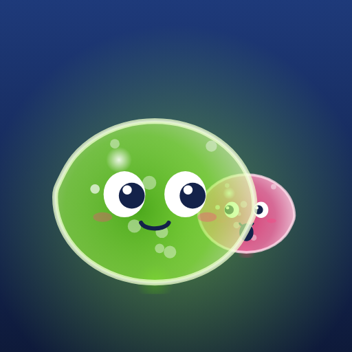
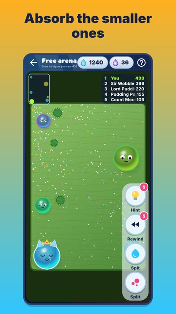

Slime Arena
A tiny living drop of gel on a kitchen table. Eat coloured drops, grow, and absorb everyone smaller than you. Gloop!
Slime Arena is a grow-and-absorb arcade: steer your slime with a finger, gather food and get bigger: Droplet, Puddle, Slime, Bruiser, Giant, and a screen-filling Titan. Mix colours: blue and yellow make a green dash, red and yellow a magnet, red and blue armour. Spit mass, split in two, escape the giants and catch the runaways. Between rounds, the Slime Lab: squish your slime, upgrade your powers and build a collection.

- 200 rounds of 1–3 minutes in 10 arenas: kitchen table, wet garden, lab, pastry shop, beach, ice cave, volcano, night neon, space and the throne room.
- Bosses and mini-bosses: a boss every 20th round, from the Jelly King to the Slime Queen, a mini-boss and a hard round every 10th.
- 24 slime species with their own tricks: berry, honey, mercury, lava, ghost, galaxy and more.
- 72 looks and outfits: faces, patterns and hats: cat, panda, watermelon, stars, crowns.
- 16 kinds of cunning named bot rivals; there is no online play.
- Rewind 5 seconds back and a "Where to swim" hint when it gets hard.
- An endless free arena with your record, the Arena of the Day, daily tasks and holidays.
- Play offline, in English and Russian.
Free, with ads: reward videos only when you choose, interstitial ads only after a win and never during a round. If you like, one reminder when you have not played for a week; it can be turned off in the settings. Grow into a giant and rule the arena!